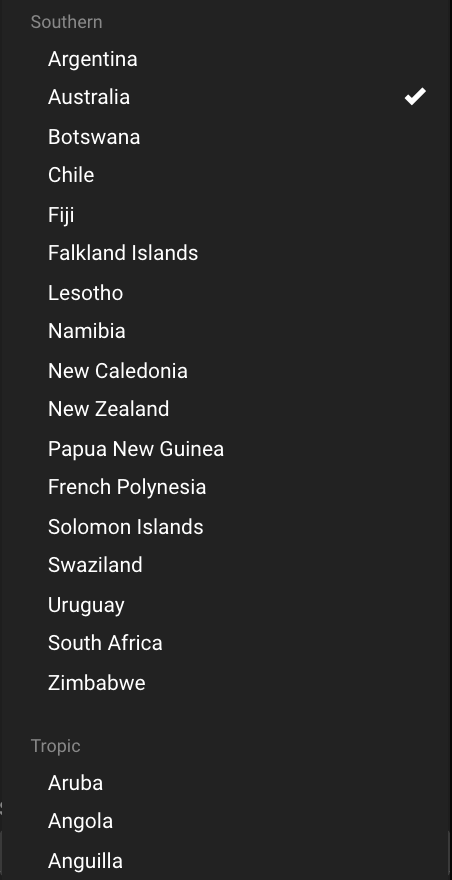

This blog post would be slightly special as it would be about peer reviewing a fellow classmate, Yiwen’s Rpackage called COVID19bb(see github link).
I think peer reviewing is a good practice. By providing and receiving feedback (especially fresh after doing the same task), we get to learn how others solve similar problems faced and learn new perspectives & methods. It is also in ways a process for self reflection.
COVID19bb Package Overview 📦This package attempts to assess the global situation of the coronavirus with 3 commonly used and familiar indicators namely cases, deaths and recovered.
It comes with it an embedded Shiny app with 3 tabs which shows different visualizations.
I really enjoyed the simplicity and the ease & intuitiveness to get started with the package and app. Especially when it comes to logical flow of the app. It starts off general with a world map before going into city level summarized and daily level.
I also like how the code and structure of the package is very reproducible and easy to follow.
The codes used in the package in the various files were neatly structured and easy to read. This is great as it might be useful for further improvements or potential pull requests in the future. Package directory was well organized.
Also, utilising shiny::include_md() in the app.R file (which stores code for the app) to reproduce the contents in the various markdown file in the app was neat especially to avoid copy pasting.
In terms of documentation, it was clearly written and understandable. Reading the documentation would allow one to be able to get started with the package.
Simply scheming through the README file was suffice for me to use the package.
The package includes a single-line code: launch_app() which launches the embedded app. Unfortunately, I could not get the app to run with the function. It seems to me that the app should be nested one more folder deeper in the inst directory like so:
COVID19bb_package
├── inst
├── app
├── app.R*see Dean Attali’s website for more details.
Nonetheless, opening the app interally from the app.R file works fine. The package did exactly what it sought out to do- provides an intuitive, easy to understand visualization tool to analyse COVID-19 situation across the 3 aforementioned indicators. Encapsulated in a package, it enhances reproducibility and accessibility.
I think before we talk about improvements it is important to note the limited time frame allowed and with that a package can almost always be improved.
In terms of the functions, select_input had the capacity to output a shiny interactive drop down menu. Whereas table_filter function might have overlooked an output. Also, it is currently fixed to China, 8 August 2020 and deaths. I think a way to improve this function is to generalise it. My recommendation would be:
from:
table_filter <- function(data, country, type, date){
data <- data %>%
dplyr::filter(country_region == "China",
type == "deaths",
observation_date == "2020-08-23" )%>%
kableExtra::kable(align = 'lccr', caption = "Daily cases of COVID-19") %>%
kableExtra::kable_styling(
font_size = 12,
bootstrap_options = c("striped", "hover", "condensed"))
data
}to:
table_filter <- function(data, country, type, date){
data %>% #<<
dplyr::filter(country_region %in% country, # <<
type == type,
lubridate::mdy(observation_date) == lubridate::ymd(date)) %>% # <<
kableExtra::kable(align = 'lccr', caption = glue::glue("Daily {type} of COVID-19")) %>% # <<
kableExtra::kable_styling(
font_size = 12,
bootstrap_options = c("striped", "hover", "condensed"))
}However, these functions were somewhat hidden as they were not used in the app nor were examples shown in README.
Regarding efficiency, map is laggy to use and takes a long time to load (about 30 seconds). Probably due to its underlying large data set. I might find an alternative to HighCharter, perhaps ggplot2. Also, consider placing one of loaders to indicate that it is loading (& alleviate the pain of waiting) Dean Atalli’s shinycssloaders or Emi Tanaka’s shinycustomloader
In “Trend among regions over time” tab. Being specific was great. However, might want improve drop down menu as there were too many options to scroll through. A good way to browse through options is to run shinyWidgets::shinyWidgetsGallery(). I think a good one could be pickerInput to distinguish cities of different countries. 
Unfortunately, I had an error ‘observation_date not found’ trying to produce the plots.
Lastly, A lot of white space in the app makes it look empty. I would recommend possibly putting tabs all in one page, reduce height of tabs or enlarge elements. Instructions within the app could also be elaborated so as to not have to refer elsewhere.
The content and idea behind the package and app were great. I learnt that some nuances can make a difference when someone is using the app for analysis and especially being on the user side, I found user interface is of paramount importance (NTS: to always ask someone to review your package!). Appearance & ease of use of the app’s interface does affect analysis and enjoyment.
Lastly, a cool feature I learnt is that I could use \dontrun{} to show in the documentation example which will not run the code as the name suggests (I used to do it manually).
Overall, COVID19bb app provides a no-fuss package that gives a good general overview of the covid-19 situation across familiar indicators, catering to a wide audience.